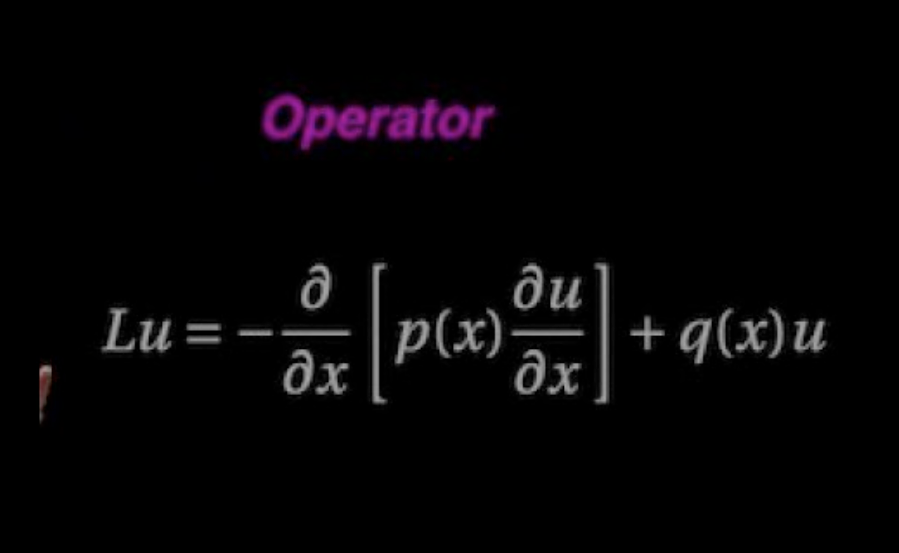

ជំពូក ១ : ការីលីនេអ៊ែរ (Linear Operators)
November 29nd, 2022
From Wikipedia:
 The Sturm-Liouville operator for solving $\mathcal Lu=f$ problems where $\mathcal L$ is a second-order, self-adjoint differential operator.
In mathematics, operator theory is the study of linear operators on function spaces, beginning with differential operators and integral operators. The operators may be presented abstractly by their characteristics, such as bounded linear operators or closed operators, and consideration may be given to nonlinear operators. The study, which depends heavily on the topology of function spaces, is a branch of functional analysis.
An operator is generally a mapping or function that acts on elements of a space to produce elements of another space (possibly the same space, sometimes required to be the same space). There is no general definition of an operator, but the term is often used in place of function when the domain is a set of functions or other structured objects. Also, the domain of an operator is often difficult to be explicitly characterized (for example in the case of an integral operator), and may be extended to related objects (an operator that acts on functions may act also on differential equations whose solutions are functions that satisfy the equation). See Operator (physics) for other examples.
The most basic operators (in some sense) are linear maps, which act on vector spaces. Linear operators refer to linear maps whose domain and image are the same space, for example $\mathbb {R}^{n}$ to $\mathbb{R}^{n}$. Such operators often preserve properties, such as continuity. For example, differentiation and indefinite integration are linear operators; operators that are built from them are called differential operators, integral operators or integro-differential operators.
- To be continued...
Basic properties
តើ LO ជាអ្វី ?
If
Let $X, Y$ be normed vector spaces. A mapping $\A$ which assigns to each element $x$ of a set $\D(\A) \subset X$ a unique element $y \in Y$ is called an operator (or transformation). The set $\D(\A)$ on which $\A$ acts is called the domain of $\A$. The operator $\A$ is called linear if
- $\D(\A)$ is a subspace of $X$
- $\A\left(\alpha_1 x_1+\alpha_2 x_2\right)=\alpha_1 \A x_1+\alpha_2 \A x_2$, for all scalars $\alpha_1, \alpha_2$ and all elements $x_1, x_2 \in \D(\A)$
The norm of such an operator is defined by \begin{equation} \|\A\|=\sup _{x \neq 0} \frac{\|\A x\|}{\|x\|} \tag{1.2}\label{eqn:1.2} \end{equation} Again, it is the smallest $M$ which works in \eqref{eqn:1.1}. An operator $A$ is called continuous at a point $x_0 \in X$ if $x_n \rightarrow x$ in $X$ implies $A x_n \rightarrow A x$ in $Y$. A bounded linear operator is continuous at each point. For if $x_n \rightarrow x$ in $X$, then $$ \left\|A x_n-A x\right\| \leq\|A\| \cdot\left\|x_n-x\right\| \longrightarrow 0 . $$ We also have
កំណត់សម្គាល់ : កំណត់ចំណាំមួយចំនួនដែលអ្នកត្រូវតែចងចាំនោះគឺ៖
- We allow $X=\emptyset$. But, sometimes the statement of the theorem must include the condition $X\neq\emptyset$. If not so, the result may be false for $X=\emptyset$.
- Distances are always positive.
- Two points are zero distance apart if and only if they are the same point.
- The distance from $A$ to $B$ and from $B$ to $A$ are the same.
- The distance from $A$ to $B$ via $C$ is at least as great as the distance from $A$ to $B$ directly.
-
Let $X=\mathbb{R}$ then $\d(x, y)=|x-y|$.
solution. - For $(x_1, x_2), (y_1,y_2) \in \mathbb R^2 $, we define \[ \d\Big(\left(x_1, x_2\right),\left(y_1, y_2\right)\Big) =\left|x_1-y_1\right|+\left|x_2-y_2\right| \] solution.
- Let $\left(X, \d_1\right)$ and $\left(X, \d_2\right)$ be two metric spaces defined on $X$. We define $\d'$ as follows: $$ \d'\Big(\left(x_1, x_2\right),\left(y_1, y_2\right)\Big) = \sum_{i=1}^2 \d_i\!\left(x_i, y_i\right) $$ Is $\d'$ metric on $X^2$ ?
Let see some spacial spaces in each metric as follows:
-
The space of all bounded sequences.
Let $X$ be the set of all bounded sequences of numbers, i.e., all infinite sequences $$ x=\left(x_1, x_2, \ldots\right)=\left\{x_i\right\}_{i \geq 1} \quad \text{s.t }\quad \sup _i\left|x_i\right|\lt \infty $$ If $x=\left\{x_i\right\}_{i \geq 1}$ and $y=\left\{y_i\right\}_{i \geq 1}$ belong to $X$, we introduce the distance $$ \d(x, y) = \sup _i\left|x_i-y_i\right| . $$ It is clear that $\d$ is a metric on $X$.
-
The space $\ell_p$
Let $X$ be the set of all sequences $x=\left\{x_i\right\}_{i \geq 1}$ such that $$ \left(\sum_{i=1}^{\infty}\left|x_i\right|^p\right)^{\!\!1 / p} \lt \infty, \quad p \geq 1 . $$ For all $x=\left\{x_i\right\}_{i \geq 1}$ and $y=\left\{y_i\right\}_{i \geq 1}\in X$, we define the function $$ \d(x, y)=\left(\sum_{i=1}^{\infty}\left|x_i-y_i\right|^p\right)^{\!\!1 / p} . $$ It is a consequence of the Minkowski inequality for infinite sums.
Note. The space $\ell_2$ is called the space of square summable sequences.
- The space of bounded functions.
Let $S$ be any nonempty set and $\mathcal{B}(S)$ denote the set of all real- or complex-valued functions on $S$, each of which is bounded, i.e., $$ \sup _{x \in S}|f(x)|\lt \infty . $$ If $f$ and $g$ belong to $\mathcal{B}(S)$, there exist $M>0$ and $N>0$ such that $$ \sup _{x \in S}|f(x)| \leq M, \quad \sup _{x \in S}|g(x)| \leq N . $$ We define $$ \d(f, g)=\sup _{x \in S}|f(x)-g(x)|, \quad f, g \in \mathcal{B}(S) $$ This metric $\d$ is called the uniform metric (or supremum metric).
-
The space of continuous functions
Let $X$ be the set of all continuous functions defined on $[a, b]$, an interval in $\mathbb R$. For $f, g \in X$, define $$ \d(f, g)=\sup _{x \in[a, b]}|f(x)-g(x)| $$ i.e. the measure of distance between the functions $f$ and $g$ is the largest vertical distance between their graphs (see Figure below). In this case, the space $X$ is denoted by $\mathcal C[a, b]$.
Note. We write $C_{\mathbb{C}}[a, b]$ for space of all complex-valued continuous functions, and $C_{\mathbb{R}}[a, b]$ for all real-valued continuous functions. We see that $\mathcal C[a, b] \subseteq$ $\mathcal{B}[a, b]$ and the metric described here is the one induced by the metric in Example (3) above, since a continuous function defined on the closed and bounded interval $[a, b]$ is bounded. It is also called the uniform metric (or supremum metric). -
The set $\mathcal C[a,b]$ can also be equipped with the metric
$$\d(f,g) = \int_a^b \Big|f(x)-g(x)\Big| dx $$
means that the measure of distance between the functions $f$ and $g$ is the area between their graphs, indicated by shading in Figure.
Note. If $f, g \in \mathcal C[a, b]$, then $|f-g| \in \mathcal C[a, b]$, and the integral defining $\d(f, g)$ is finite. It may be easily verified that $\d$ is a metric on $\mathcal C[a, b]$.

Fig.1. Supremum metric

Fig.1. $\d(f,g) is the area between curves.
- Let $X=\mathbb{R} \cup\{\infty\} \cup\{-\infty\}$. Define $f: X \rightarrow \mathbb{R}$ by the rule $$ f(x)=\left\{\begin{array}{cl} \frac{x}{1+|x|} & \text { if }-\infty \lt x\lt \infty \\ 1 & \text { if } x=\infty \\ -1 & \text { if } x=-\infty \end{array}\right. $$ We define a function $\d$ on $X$ as follows: $$ \d(x, y)=\Big|f(x)-f(y)\Big|,\quad x, y \in X $$
- On $X=\mathbb{R} \cup\{\infty\} \cup\{-\infty\}$, define $$ \d(x, y)=\left|\tan ^{-1} x-\tan ^{-1} y\right|, x, y \in X $$
Let $(X, \d)$ be a metric space. Define $\d': X \times X \rightarrow \mathbb{R}$ by $$ \d'(x, y)=\frac{\d(x, y)}{1+\d(x, y)} . $$ Then $\d' $ is a metric on $X$. Besides, $\d' (x, y)\lt 1$ for all $x, y \in X$.
Click on the link to view homework 4.!
Let $X$ be a nonempty set. A pseudometric on $X$ is a mapping of $X \times X$ into $\mathbb{R}$ that satisfies the conditions:
- (PM1) $\quad \d(x, y) \geq 0, \quad x, y \in X$
- (PM2) $\quad \d(x, y)=0, \quad$ if $x=y$
- (PM3) $\quad \d(x, y)=\d(y, x), \quad x, y \in X$;
- (PM4) $\quad \d(x, y) \leq \d(x, z)+\d(z, y), \quad x, y, z \in X$.
Recent Posts
- A Note on the Variation of Parameters Method | 11/01/17
- Group Theory, Part 3: Direct and Semidirect Products | 10/26/17
- Galois Theory, Part 1: The Fundamental Theorem of Galois Theory | 10/19/17
- Field Theory, Part 2: Splitting Fields; Algebraic Closure | 10/19/17
- Field Theory, Part 1: Basic Theory and Algebraic Extensions | 10/18/17